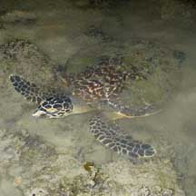
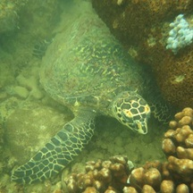
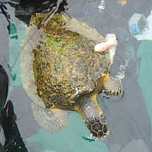
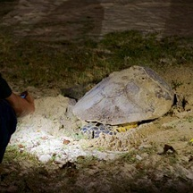
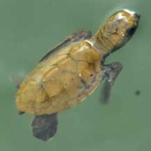
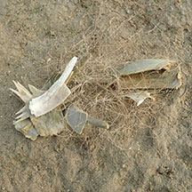
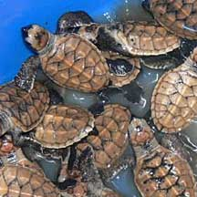
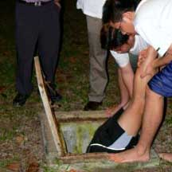
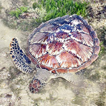

|
|
| vertebrates text index | photo index |
| Phylum Chordata > Subphylum Vertebrata > Class Reptilia |
| Sea
turtles Family Cheloniidae updated Oct 2019 Where seen? Adult sea turtles are sometimes sighted near our Southern Islands. While there have been several incidents of baby sea turtles hatching on our shores, including East Coast Park! Features: Marine turtles are air-breathing reptiles that live out at sea. They only return to land to lay their eggs on sandy beaches. Superbly adapated to life at sea, the sea turtles limbs are modified into oar-like flippers. As adults many migrate, some for very long distances. Studies show that sea turtles found in Singapore waters may nest on shores in our neighbouring countries, and possibly visa versa. Globally, there are 7 sea turtle species belonging to two families. The two species most commonly encountered in Singapore are the Green turtle and the Hawksbill turtle.
|
 Young sea turtle found resting in the man-made lagoon. Sisters Island, Jul 10 Photo shared by Toh Chay Hoon on her blog. |
 Kusu Island, Sep 13 Photo shared by Leong Chin Rick on facebook. |
 Hawksbill turtle (serrated edge of shell at the back). Pulau Semakau, Nov 07 Photo shared by Teo Siyang on his blog. |
| Stranded
baby sea turtles: In recent years, there were incidents
of sea turtle hatchlings going in the 'wrong' direction when they
emerged from the sandy shores of East Coast Park. Why do they do
this? Baby sea turtles' natural instinct is to head towards the
sea. In nature, starlight and moonlight on the water would guide
them in the right direction. However, in urbanised shores like ours,
light from our parks, streets and other human activities disorientate
them. As a result, they head in the wrong direction and usually
come to a sad end. What to do with sea turtles stranded on the beach? If you spot any sea turtles on our shores, call the Police or NParks (Helpline number: 1800 4717300, or any other emergency number that you can see posted on signage in the park). They will then activate the Standard Operating Procedure to rescue them. Speak softly and stay out of sight, avoid shining lights or using flash photography, as light and noise may scare the sea turtle before it lays. Don't trample over tracks left by turtles, as researchers use them to identify the species and locate nests. You can make a difference: Join NPark's Biodiversity Beach Patrol where volunteers patrol the shores and gather data on sea turtle populations in Singapore. Patrols are done June to September yearly, 5am and 7am, 6 days a month per site. Status and threats: Our sea turtles are listed as 'Critically Endangered' on the Red List of threatened animals of Singapore. These species are also globally 'Critically Endangered'. Globally, sea turtles are threatened by overharvesting of their eggs, and as adults for their meat and shells. Sea turtles also drown when trapped in fishing lines and nets, and die a slow and painful death when they accidentally eat plastic bags and other marine debris. Their nesting beaches are also lost to reclamation or affected by coastal development, light and chemical pollution and other human activities nearby. |
 Sea turtle seen attempting to lay eggs. East Coast Park, Jul 13 Photo shared by David Tan on facebook. |
 Baby sea turtle seen in the man-made lagoon. They were eventually released into the sea. Kusu Island, Sep 09 |
 Bones of a dead sea turtle in an abandoned net. Pulau Semakau, Mar 19 |
{kind=link}
| Sea turtles on Singapore shores |
On wildsingapore
flickr
|
| Other sightings on Singapore shores |
 Rescued hawksbill turtle hatchlings. |
 Searching for lost Hawksbill hatchlings. |
 Dead sea turtle washed ashore. Pulau Tekukor, Jun 16 Photo shared by Loh Kok Sheng on facebook. |
| Sea
turtles recorded for Singapore from Wee Y.C. and Peter K. L. Ng. 1994. A First Look at Biodiversity in Singapore. *Lim, Kelvin K. P. & Jeffrey K. Y. Low, 1998. A Guide to the Common Marine Fishes of Singapore. in red are those listed among the threatened animals of Singapore from Davison, G.W. H. and P. K. L. Ng and Ho Hua Chew, 2008. The Singapore Red Data Book: Threatened plants and animals of Singapore.
|
|
Links
Past sea turtle sightings in Singapore
References
|